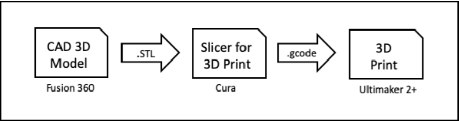
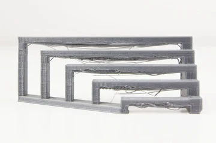
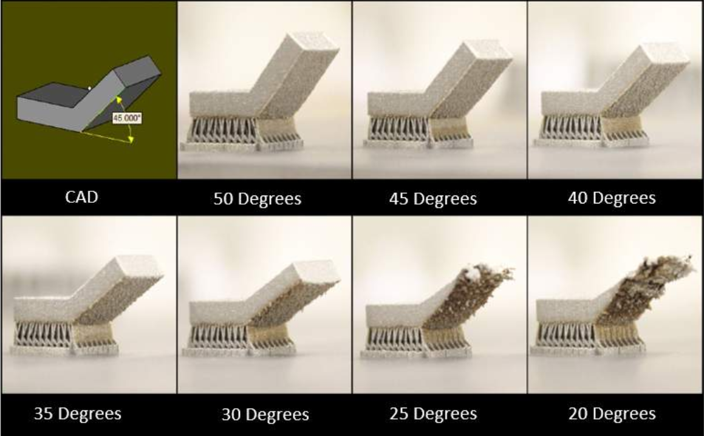

3D Printing
What is 3D Printing
3D printing is a manufacturing process that allows the creation of 3 dimension solid objects from a digital file through additive process.
Unlike subtractive process which involves the removal of material from a raw substrate block (e.g. milling, turning or routing), additive process creates an object by adding material in successive layers. Objects that cannot be created using subtractive methods because of holes and cavities within the object can be done using additive method in 3D Printing.
Here is a video which i've found useful for understanding the basics of 3D printing, enjoy!
Process of 3D Printing
1. We first model the 3D object using Fusion 360.
2. Using Fusion 360, we generate the STL ("Standard Tessellation Language") file which is a representation of the 3D object.
3. We use a Slicer program (CURA), configured for the 3D printer e.g Ultimaker 2+ to load the .STL file. The Slicer program, slices the 3D model into layers for printing. It also allows us to configure how we would like to print the object.
4. The Slicer program outputs the print job (.gcode) in a format that the 3D printer understands and prints it.
In SP Fablab workshop, we commonly use:
Group project
Each member will be testing on the following properties: bridging, overhang, infill density, clearance
Zhi Ann - Infill density
To test the effect of infill density, i will be using a cube of dimensions 2cm x 2cm x 2cm, created in fusion 360. The 4 variable of infill density testing will be 10% , 40%, 70% and 100%. Since the 3d printing will be exactly the same as the slicer programme, we can simply see the results using the CURA software.
10% 40%


70% 100%


As the infill density increases, the pattern of support structures within the design increases to fill up the spaces in each layer(10%, 40%, 70%, 100%). By having a higher infill density, more amount of filament will be used, resulting in a greater volume and a stronger structure from within which is stronger and harder to break.
Bridging
Bridging in 3D printing is an extrusion of material that horizontally links two raised points without the use of support materials. From the result it shows that the further the bridiging within two points, the worst the quality of the 3d printing gets as the 3d printer has no base to print on and the drop causes the layering to be affected greatly resulting in a poor structural design.
Overhang
An overhang is any part of a print that extends outward, beyond the previous layer, without any direct support. As the angle gets steeper, the worse the result of the 3d printing quality. For designs that is less than 45 Degrees, it is recommended to add in Support to prevent poor quality printing.
Clearance
The amount of clearance depends on the functionality of the part, the higher the clearance, the more likely it is to fit. The minimum clearance is 0.5 mm for Versatile plastic. Having the clearance less than 0.5mm will cause your 3d printed parts to fuse together.